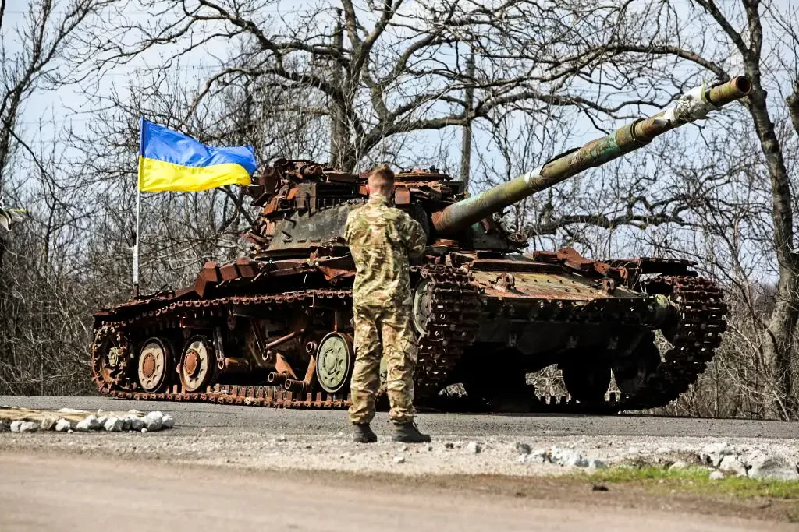

A invasão da Rússia à Ucrânia em 24 de fevereiro envolve diversos fatores.
Dentre eles sedestaca a sinalização do governo ucraniano para um possível ingresso na OTAN
(Organização do Tratado do
Atlântico Norte),
aliança militar do ocidente, criada ainda na época da Guerra Fria,
que tem os Estados Unidos
como principal potência integrante.
Uma das demandas do presidente russo, Vladimir Putin, para cessar os ataques no país vizinho é uma garantia de
que a Ucrânia nunca faça parte da organização. Diante desses fatos, se faz necessário entender como atuam os
membros dessa organização, o que ela representa para a geopolítica atual e por que a Rússia a enxerga como uma
ameaça.
A invasão da Rússia na Ucrânia reúne condicionantes históricos e geográficos que têm o
potencial de ocasionar um grande conflito mundial. A tensão entre os dois países se intensificou nos últimos
30 anos em razão da aproximação da Ucrânia do Ocidente e também por causa do desrespeito da soberania
ucraniana por parte da Rússia. Portanto, a Rússia invadiu a Ucrânia com o propósito de combater a aproximação
ucraniana com as potências ocidentais e ainda manter sua zona de influência na porção oriental do território
europeu.
O conflito entre Rússia e Ucrânia tem desdobramentos relevantes, como grandes perdas econômicas e a
reorganização dos atores internacionais. A guerra já deixou milhares de mortos e milhões de refugiados.
"A Guerra entre a Rússia e a Ucrânia é um conflito que acontece no Leste do continente europeu. Após
um longo período marcado pelo acirramento das tensões entre ambos, as tropas russas invadiram o país vizinho
em 24 de fevereiro de 2022, promovendo ataques a cidades situadas próximo da capital da Ucrânia, Kyiv, e
outros pontos estratégicos do território ucraniano. O contra-ataque realizado pela Ucrânia em meados de 2022
fez com que a Rússia recuasse em alguns pontos, mas o país ainda mantém domínio sobre grandes áreas no leste
e ao sul da Ucrânia.
Pouco mais de um ano após o início da guerra, os ataques continuam. O saldo até então é de dezenas de
milhares de mortos e feridos, além de 8 milhões de refugiados ucranianos, que buscam proteção em outros
países europeus. As consequências da guerra são, também, econômicas e políticas. Em um contexto global, o
conflito interfere na geopolítica, nos acordos diplomáticos e no comércio internacional."
Veja mais sobre "Guerra entre Rússia e Ucrânia" em:
https://brasilescola.uol.com.br/geografia/guerra-entre-russia-e-ucrania.htm
